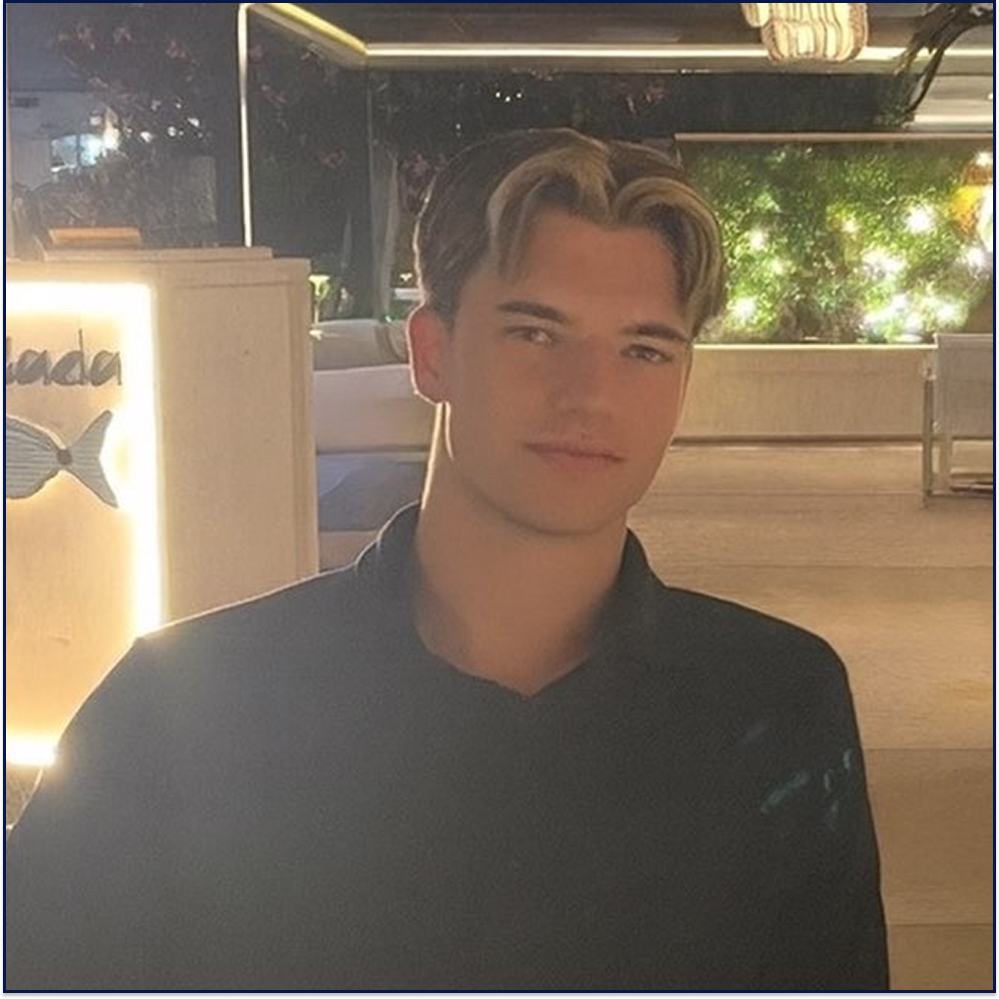

Per Heine Sande
Informatikkstudent ved Universitetet i Oslo
Informatikkstudent ved Universitetet i Oslo
Jeg er informatikkstudent på tredje året ved UiO med bachelorretning innen design og interaksjon. Jeg brenner for å skape gode brukeropplevelser støttet av solid teknisk arkitektur og fremstilt med godt design.
Som toppidrettsutøver tar jeg med meg en unik disiplin og evne til å hondtere press inn i hvert prosjekt. Jeg er vant til å sette høye mål og jobbe strukturert for å nå dem.
Jeg trives best i skjæringspunktet mellom koding og design, og ser alltid etter innovative løsninger på utfordringer.
Ekko er et prosjekt jeg jobber med som skal være en lokal AI assistent bestående av flere AI modeller. Målet med Ekko er at ulike AI modeller skal kunne samarbeide for å gi best mulig respons til brukeren. Ekko er enda i tidlig fase, men jeg gleder meg til å dele mer om prosjektet etterhvert.